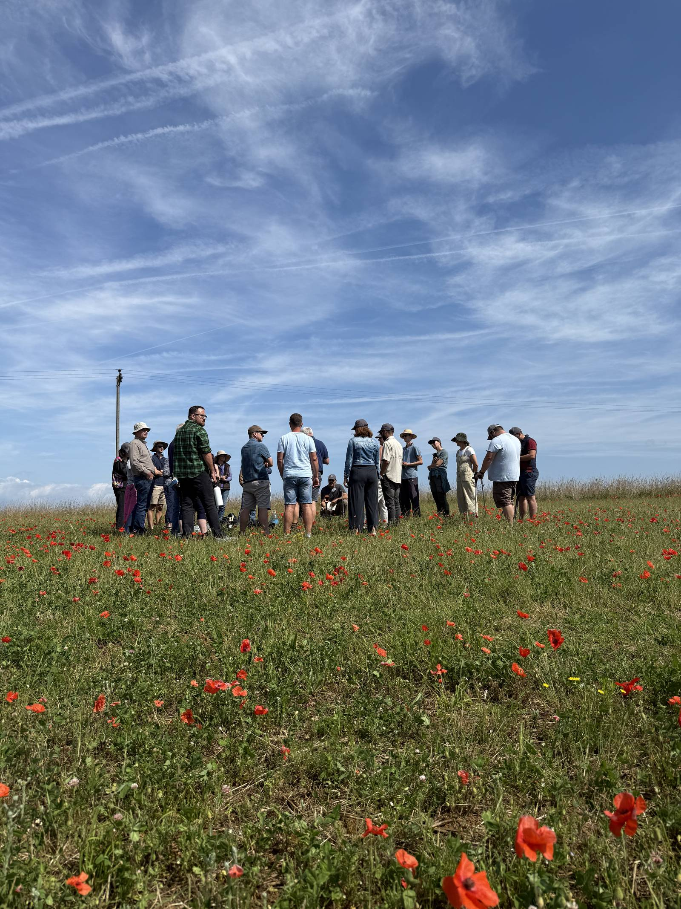
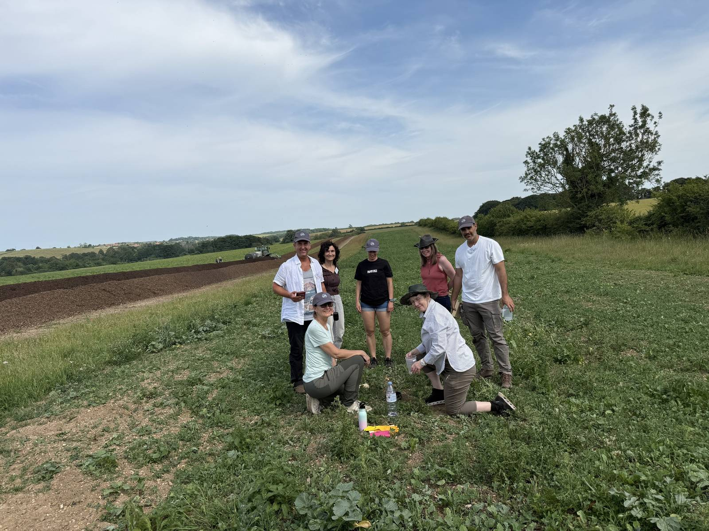
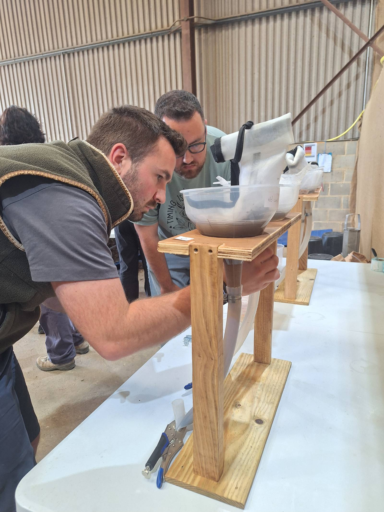
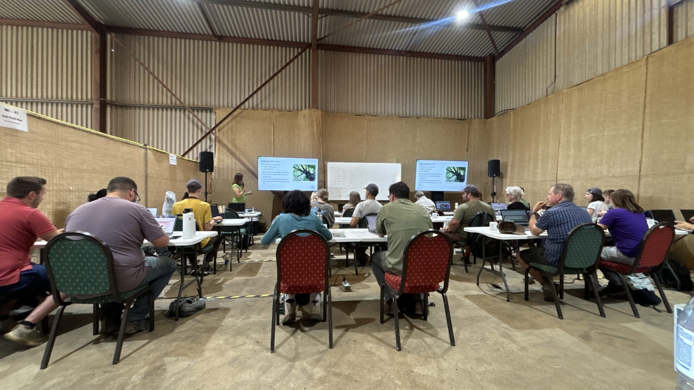

Accelerator Workshop June 2025
Norfolk, United Kingdom · 16–27 June 2025
This workshop has ended.

The group in a field of red poppies
Overview
The June 2025 Accelerator Workshop took place at Wild Ken Hill Estate, at Heacham Bottom Farm near Snettisham in Norfolk, England (Workshop Handbook June 2025). The estate covers about 4,000 acres, from the sea through coastal scrub, freshwater marshes, heathland and wood pasture to farmland, and combines rewilding with regenerative farming (Workshop Handbook June 2025; Wild Ken Hill). SFW School mentor Nick Padwick manages the farm and hosted the students (October 2025 newsletter; 2025 in Review). He grows wheat in an ecologically healthy system for a premium market (2025 in Review), and runs a large-scale composting operation: with a tractor-mounted compost turner he produces 750 tons of compost a year (October 2025 newsletter).


That operation set this workshop apart. Students built six compost piles of their own (Workshop Handbook June 2025), and then saw how the same process works at farm scale, turner and all (October 2025 newsletter). Lectures ran in a barn fitted with two projection screens, and the barn floor became the workspace (photo). Students measured out compost tea in graduated jugs and built extraction stations, with white mesh extraction bags hung from wooden frames and jars of extract on stands with tubing (photo). They also walked the fields with Nick for field instruction on the farm (October 2025 newsletter; photo).



Student Melita Coggins called the workshop life changing (2025 in Review). The group photo was taken in a field of red poppies (photo).

Why it matters
England's farm soils are in trouble. According to the Environment Agency, intensive agriculture has cost arable soils about 40 to 60 percent of their organic carbon (Environment Agency). Almost 4 million hectares are at risk of compaction and over 2 million hectares at risk of erosion (Environment Agency). Soil degradation was estimated in 2010 to cost England and Wales £1.2 billion a year (Environment Agency). Compost is one of the most direct ways to put organic matter back. On a farm that makes 750 tons a year and grows wheat for a premium market (October 2025 newsletter; 2025 in Review), students saw that rebuilding soil biology can work at commercial scale.
References
- Environment Agency. (2019, June 3). Summary of the state of the environment: Soil (updated 2023, January 26). GOV.UK. https://www.gov.uk/government/publications/state-of-the-environment/summary-state-of-the-environment-soil
- Soil Food Web School. (2025). Workshop handbook: June 2025 [PDF]. https://www.soilfoodweb.com/wp-content/uploads/2025/02/WORKSHOP-HANDBOOK-JUNE-2025.pdf
- Soil Food Web School. (2025, December 30). 2025 in review: A time of transition, honoring our founder and guiding spirit, building stronger community, and preparing for a bright future. https://soilfoodweb.com/2025-in-review-a-time-of-transition-honoring-our-founder-and-guiding-spirit-building-stronger-community-and-preparing-for-a-bright-future/
- Soil Food Web School. (2025, October 9). October 2025 – Newsletter. https://soilfoodweb.com/october-2025-newsletter/
- Wild Ken Hill. (n.d.). About Wild Ken Hill. https://wildkenhill.co.uk/about/